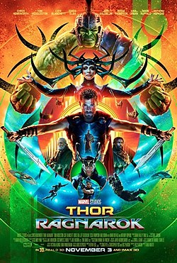

Sobre
Stephen Vincent Strange, mais conhecido como Doutor Estranho, é um super-herói fictício muito poderoso que aparece nos quadrinhos americanos publicados pela Marvel Comics. Criado pelo desenhista Steve Ditko e pelo roteirista Stan Lee, o personagem apareceu pela primeira vez em Strange Tales #110 (julho de 1963). Doutor Estranho serve como o Mago Supremo, o principal protetor da Terra contra ameaças mágicas e místicas. Inspirado por histórias de magia negra e o programa de rádio Chandu, the Magician, Strange foi criado durante a Era de Prata das histórias em quadrinhos americanas para trazer um tipo diferente de personagem e temas de misticismo para a Marvel Comics.
A história de origem do personagem relata que ele já foi um brilhante e egoísta neurocirurgião dotado com um coeficiente intelectual (QI) próximos aos 177 pontos. Depois que um acidente de carro que danifica severamente suas mãos e dificulta sua capacidade de realizar uma cirurgia, ele viaja pelo mundo por uma maneira de conseguir a cura e encontrar o Ancião. Depois de se tornar um dos antigos alunos do Mago Supremo, ele se torna um praticante tanto das artes místicas como das artes marciais. Além de conhecer muitos feitiços poderosos, ele tem uma roupa com dois objetos místicos - o Manto da Levitação e o Olho de Agamotto - que lhe dão poderes adicionais. Stephen é auxiliado ao longo do caminho por seu amigo e valet, Wong, e uma grande variedade de objetos místicos. Ele passa a residir em uma mansão chamada Sanctum Sanctorum, localizada na cidade de Nova Iorque. Mais tarde, Strange ganha o título de Mago Supremo.
Em 2008, o Doutor Estranho ficou em 83º lugar na lista "200 Maiores Personagens de histórias de Todos os Tempos" da Revista Wizard, e em 2012 ficou em 33º lugar na lista "The Top 50 Avengers" do IGN. Ele também foi classificado em 38º na lista "Top 100 Comic Book Heroes" do IGN. O personagem foi retratado pela primeira vez em live-action por Peter Hooten em 1978, no telefilme Dr. Strange. Benedict Cumberbatch estrela como o personagem do Universo Cinematográfico da Marvel, aparecendo pela primeira vez no papel no filme Doutor Estranho, de 2016. Ele reprisou o papel nos filmes Thor: Ragnarok (2017), Vingadores: Guerra Infinita (2018), e Vingadores: Ultimato (2019), com papeis confirmados em Homem-Aranhaː Sem Volta Para Casa (2021), e seu segundo filme solo, Doutor Estranho no Multiverso da Loucura (2022).
Biografia
Infância
Stephen Strange nasceu em 1930, filho de Eugene e Beverly Strange, enquanto o casal estava de férias na Filadélfia. Em 1932, a irmã de Stephen, Donna nasceu na fazenda da família no Nebraska. Sabendo que Strange estava destinado a se tornar o próximo Mago Supremo, um feiticeiro aprendiz ressentido, Karl Mordo, atormentou a criança com demônios desde os oito anos de idade até à idade adulta, devido ciúmes de uma criança que no futuro seria melhor que ele. Strange foi resgatado pelo mestre de Mordo, o Ancião, protetor místico da Terra e Mago Supremo da época. Após um ou dois anos do começo do tormento, o irmão de Stephen, Victor, nasceu. Aos onze anos, Strange ajudou Donna quando ela estava ferida, uma experiência que desenvolveu seu interesse na medicina. Strange entrou na Faculdade de Nova Iorque como um estudante de medicina. Mais tarde, enquanto passava as férias em casa para o seu décimo nono aniversário, Strange estava nadando com Donna quando ela sofreu uma cãibra. Depois de uma busca frenética, Stephen a encontrou já afogada. A experiência deixou-o com uma sensação de fracasso pessoal que corroeu seu idealismo médico.
Carreira médica
Brilhante cirurgião, Stephen recebeu seu Ph.D. em Medicina na Universidade Columbia em tempo recorde e entrou em uma residência de cinco anos no Centro Médico da Universidade de Columbia, onde seu rápido sucesso o tornou arrogante. A mãe de Stephen, Beverly, morreu perto do fim de sua residência, e o trabalho se tornou mais e mais impessoal para o cirurgião de luto. No entanto, Strange continuou talentoso, e ele tornou-se um rico e célebre neurocirurgião antes de completar trinta anos. Stephen era um doutor arrogante, egoísta, ganancioso, frio e insensível, o interesse de Strange em seus pacientes em geral começava e terminava em suas contas. A exceção foi Madeleine Revell, uma tradutora das Nações Unidas ferida que ele salvou e se apaixonou. Após um rápido romance e uma proposta de casamento, ela o deixou, devido à sua natureza cada vez mais materialista. Dois anos após a morte de sua mãe, o pai de Strange também adoeceu. Já prejudicado pela perda da mãe (embora nunca admitisse), Stephen estava incapacitado de enfrentar outra tragédia, e se recusou a visitar o seu pai em leito de morte. Dias depois, Victor, indignado, confrontou Stephen em seu apartamento sobre a aparente falta de luto. Após o confronto, Victor saiu correndo e foi morto atropelado por um carro, e Stephen com a culpa o perturbando, colocou o corpo de Victor em uma câmara criogênica, esperando que avanços futuros poderiam reanimá-lo.
Acidente de carro e a origem de seus poderes místicos
Por volta de 1963, Strange (então com 33 anos) envolveu-se em um acidente de carro que danificou os nervos de suas mãos afetando o movimento, impedindo de continuar na profissão de médico. Com sua carreira cirúrgica terminada e muito vaidoso para aceitar cargos como consultor ou assistente, Strange esgotou sua fortuna com vários tipos de tratamento, não importando se fossem ineficazes. Em questão de meses, o cirurgião tornou-se um desamparado, e teve que realizar uma série de procedimentos médicos suspeitos para sobreviver e pagar suas contas. A culpa de Strange sobre os erros de sua juventude pesaram sobre ele ao longo dos anos, suas lembranças da época nem sempre foram confiáveis.
Após ouvir rumores sobre um ancião místico, Strange penhorou suas últimas posses em uma passagem para o tibete. Strange encontrou o palácio Tibetano do Ancião, mas o feiticeiro idoso se recusou a curá-lo, ao invés disso, ofereceu aulas de misticismo. Strange recusou, mas não pôde ir embora devido a uma tempestade de neve repentina. Enquanto esperava a tempestade terminar, Strange testemunhou o aprendiz do Ancião, o Barão Mordo, atacar por ciúmes o professor, com esqueletos convocados misticamente, os quais o velho facilmente dissipou. Strange, com seu ceticismo diminuindo, confrontou Mordo sobre sua traição, mas Mordo respondeu com feitiços de contenção que impediram Strange de avisar ao Ancião ou de atacar Mordo fisicamente. Espantado com estas exibições de magia, Strange passou por uma mudança de ideologia. Percebeu que o único modo de impedir Mordo era aprender a magia, então, aceitou a oferta do Ancião. Satisfeito com a aceitação de Strange de modo altruísta, o Ancião removeu as restrições místicas, explicando que ele estava bem ciente da traição de Mordo mas preferiu mantê-lo por perto, a fim de o controlar e possivelmente mudá-lo.
O Ancião sabia que Strange tinha potencial para servir como Mago Supremo, antes mesmo de seu primeiro encontro com ele. Assim, o Ancião planejou fazer de Strange seu sucessor. Então, Strange passou anos sob a tutela do Ancião, aprendendo a controlar os poderes místicos, do seu interior e do mundo, e a invocar os poderes dos Principados, seres poderosos, como Dormammu, Satannish e Vishanti, os quais residem em seus próprios reinos místicos. Alguns anos após a chegada de Strange, Mordo deixou o palácio do Ancião para buscar poderes maiores. Os dois rivais iriam colidir muitas vezes no futuro. Foi durante esse tempo que Strange passou por um teste contra a própria Morte. Como recompensa, foi dado a Strange vida eterna, e uma marca em forma de Ankh na testa que só aparece quando sua vida está em grande perigo. O próprio Ancião tinha alcançado quase imortalidade por passar neste teste há mais de 600 anos.
Durante seus primeiros anos como um estudante das artes místicas, Strange fez amizade com muitos feiticeiros de todo o mundo, incluindo o Lorde Julian Phyffe e Sir Clive Bentley da Grã-Bretanha; o Cardeal Alfeo Spinosa e o Conde Tancredo Carezzi da Itália; Omar Karindu, Rama Kaliph, e Turhan Barim do Oriente Médio; Wai Chee Yee e Sen-Yu da Ásia; e Aleister Kane, Kenneth Ward, e Frank Brukner da América. Strange também encontrou aliados entre a maioria dos heróis da Terra, auxiliando o Raposa Negra em pelo menos duas aventuras, enquanto outros aventureiros, como Immortalis e Terror, o olhavam com ceticismo.
Strange estudou magia com o Ancião por sete anos e voltou para os Estados Unidos na década de 70. Strange tornou-se um consultor místico, estabelecendo seu Sanctum Sanctorum em Greenwich Village, Nova Iorque. Ele foi ajudado por Wong, o mais recente em uma linhagem de séculos, que havia servido o Ancião, e quem havia se tornado um criado, bem como um amigo. Durante este tempo, Strange lutou contra entidades demoníacas, como os Possuidores, Aggamon, a Casa de Sombras, Zota, um Imp da Garrafa e KhLΘG. Strange também lutou contra o sobrenatural Pesadelo, o qual se alimenta dos pesadelos da humanidade, que acabou se tornando um dos seus inimigos mais cruéis. A misteriosa reputação do Doutor cresceu, e até mesmo tornou-se um consultor ocasional para as autoridades locais e federais.
Carreira como super-herói
Quando a estreia do Quarteto Fantástico anunciava a aurora da Era Heroica, Strange inicialmente permaneceu afastado da comunidade super heroica de Nova Iorque, lutando secretamente contra o Pesadelo e o Barão Mordo. Em certo momento, Loki, o deus Asgardiano da trapaça, manipulou Strange para atacar seu irmão de criação, Thor. No entanto, a traição foi descoberta e Strange voltou-se contra Loki. Thor, mais tarde, sob o disfarce de Dr. Donald Blake, salvou a vida de Strange ao operá-lo após outra batalha contra Mordo. Logo depois, um confronto com Mordo levou Strange a aliar-se com o Homem-Aranha, o qual ajudou a resgatar várias pessoas de uma dimensão mística. Sendo uma experiência tão traumática que o Homem-Aranha pediu para Strange remover suas memórias sobre o evento, embora isso também os levou a esquecer o heroísmo do Homem-Aranha. Impressionado com a coragem e altruísmo do jovem herói, Strange o considerou como um amigo, e os dois uniram-se muitas vezes ao longo dos anos.
Dormammu, sentindo que o poder do Ancião diminuía, desafiou Strange para um duelo místico em sua Dimensão Negra, como parte de um plano maior para invadir o Reino da Terra e fundir com seu reino sombrio. Enquanto estava lá, Strange foi abordado por Clea, uma feiticeira principiante e, filha da irmã de Dormammu, Umar. Clea temia que, se Dormammu caísse como governante da Dimensão Negra, as barreiras dimensionais enfraqueceriam e o reino seria devastado pelos Acéfalos. Assim, Clea procurou impedir o duelo, mas Strange não se renderia. Dormammu facilmente superou Strange, mas perdera energia o suficiente para que os Acéfalos fossem capazes de invadir. Procurando salvar os habitantes desta Dimensão, Strange emprestou a Dormammu energia para restaurar a barreira. Enfurecido por sua própria fraqueza, Dormammu teve que poupar Strange, que negociou a salvação da Terra e de Clea. No entanto, o vingativo Dormammu nunca se esqueceu da humilhação, e se tornou um dos inimigos mais implacáveis de Strange. Após a vitória, o Ancião presenteou Strange com o Manto da Levitação.
Strange juntou-se a vários super-heróis na batalha contra o poderoso Sundown. Agora, mais envolvido com a comunidade de super-heróis, tornou-se um consultor especial para as principais super equipes, como o Quarteto Fantástico, os X-Men e os Vingadores. Meses depois de ir ao casamento de Reed e Sue Richards, Strange se reencontrou com seu próprio amor, Clea, que veio para viver com ele em Nova Iorque.
Mais tarde, Strange foi exilado para uma dimensão hostil por Asmodeus, que tomou a forma do Doutor na tentativa de pegar o Ancião de surpresa. Impedido de retornar para o Reino da Terra por leis metafísicas enquanto Asmodeus ocupava sua forma, Strange adotou uma nova forma, com uma máscara (talvez imitando seus aliados super-heróis). Depois de derrotar Asmodeus, Strange manteve sua nova aparência para preservar o anonimato. Após descuidadamente revelar seu nome durante uma batalha contra o Pesadelo, a Entidade Cósmica, conhecida como Eternidade, a quem Strange ajudava, concordou em devolver o anonimato alterando todos os documentos e memórias terrenas relevantes com o nome "Stephen Strange" para "Stephen Sanders".
Pouco depois, Strange resistiu à invasão dos Imortais, uma raça de demônios que uma vez tinha dominado a Terra, e foram conduzidos pelo infernal Inominável. Para enfrentar o ataque, Strange manipulou o príncipe Namor de Atlântida e o monstruoso Hulk para o ajudar. Com os Imortais derrotados, Strange parecia acreditar que o mundo estava salvo de outras invasões. No entanto, Strange estava incomodado por sua arrogante exploração de Namor e Hulk, e decidiu abandonar a magia e voltar para a medicina como um consultor, altruisticamente desempenhando tarefas que antes acreditava estar abaixo dele.
O retorno de Strange à medicina durou apenas algumas semanas. Depois do Barão Mordo tentar mata-lo, Strange voltou para a feitiçaria e derrotou Mordo com a ajuda do Ancião. O Ancião, por razões próprias, reverteu o feitiço da Eternidade, restaurando o nome "Stephen Strange" para os registros e memórias do mundo. Mas, o Inominável voltou e Strange teve que enfrentar a ameaça ao lado de Namor e Hulk. Tornando-se amigos e, os três foram logo acompanhados pelo alienígena Surfista Prateado para formar os Defensores, uma "não-equipe" que iria se reunir esporadicamente para atender às ameaças contra a Terra.
Porém, mesmo sendo um humano, Stephen tem mais "poder de fogo" do que qualquer mutante, sendo o Feiticeiro Supremo da Terra. Porém, ele não revela seus poderes ao Mundo, exercendo suas atividades heroicas em segredo. Depois de ter derrotado sem piedade a Feiticeira Escarlate, acabou com a distorção da realidade provocado por ela.
Filmes
-
Doutor Estranho de 2016

-
Thor: Ragnarok de 2017
 -
Vingadores: Guerra Infinita de 2018

-
Vingadores: Ultimato de 2019

-
Homem-Aranha: Sem Volta Para Casa para 2021 (em produção)
-
Doutor Estranho e o Multiverso da Loucura para 2022